Observe, Imagine, Abstain
When a 3D model has not seen a surface, does it say so? We measured five of them. Mostly, no. Then we taught them to say so, without any labels.
Detecting hallucinated geometry in feed-forward 3D reconstruction. Anonymous submission to CVPR 2027.
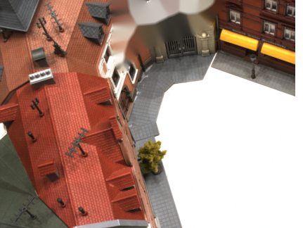
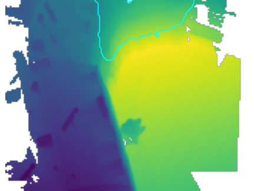
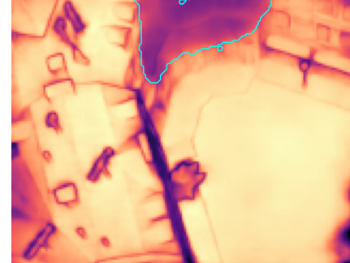
ABSTRACTIn one paragraph
Feed-forward 3D models (VGGT, Pi3, Pi3X, MapAnything, Depth Anything 3) reconstruct a scene from unposed photographs in one pass. Where no photograph shows a surface they fill the gap from learned priors, and they assign the invented geometry a confidence close to that of observed geometry. We define a predicted point as hallucinated when it lies on a surface no input view shows, and build a benchmark that labels such points for free by hiding a 3D region of the ground-truth surface in every view. Across five models and three datasets, native confidence lets 24% to 81% of unsupported pixels through a filter that keeps 90% of observed ones. Cheap fixes (perturbation variance, reprojection consistency) do not help, and a head trained on the benchmark's own fills learns the fill. We then change what the detector must learn: a small support head on the frozen cross-view features predicts whether each pixel has multi-view support, with labels computed from the backbone's own prediction, so it needs no ground truth. On three backbones and four datasets it never saw it separates single-view from supported geometry at AUROC 0.93 to 0.99 against 0.55 to 0.89 for native confidence, matches a head trained on ground-truth visibility, and beats a per-image control that falls below chance off the lab rig. One limit, measured: a consistent invention that every view agrees on passes every test, this head included.
01 / THE FINDINGNative confidence does not know what the model has seen
We hide one 3D region of the ground-truth surface in every input view (three fills, five placements, two sizes, plus an inpainted fill that leaves no seam), run the model, and ask whether its confidence separates the pixels inside the hidden region (unsupported) from those far outside (supported). AUROC measures the ranking; CUR, the Confident-Unsupported Rate, is the share of unsupported pixels that survive a threshold keeping 90% of supported ones.
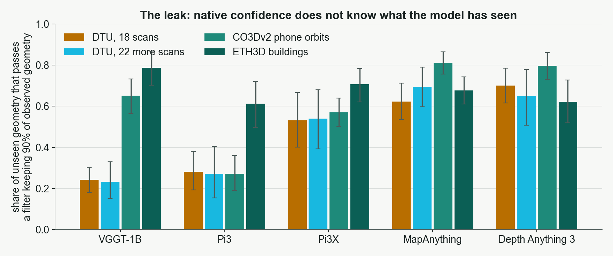
| model | DTU, 18 scans | DTU, 22 more | CO3Dv2 | ETH3D | ||||
|---|---|---|---|---|---|---|---|---|
| AUROC | CUR | AUROC | CUR | AUROC | CUR | AUROC | CUR | |
| VGGT-1B | 0.903 | 0.242 | 0.908 | 0.233 | 0.681 | 0.651 | 0.670 | 0.786 |
| Pi3 | 0.912 | 0.281 | 0.919 | 0.272 | 0.891 | 0.272 | 0.771 | 0.612 |
| Pi3X | 0.813 | 0.532 | 0.851 | 0.539 | 0.732 | 0.570 | 0.661 | 0.707 |
| MapAnything | 0.743 | 0.622 | 0.697 | 0.693 | 0.576 | 0.810 | 0.667 | 0.677 |
| Depth Anything 3 | 0.711 | 0.701 | 0.755 | 0.650 | 0.620 | 0.797 | 0.698 | 0.620 |
Pooled over blur and noise fills; five seeds and two radii on the 18-scene sets, seed 0 and radius 0.18 on the 22 extension scans. Intervals in the paper and in results/P3-stats.md.
02 / THE BENCHMARKLabels for free, with controls on the same pixels
One sphere, placed on the ground-truth surface, is hidden in every view with the true cameras. Pixels inside it are unsupported in every view; pixels outside a margin are supported. A clean run of the same views gives a control for every pixel, so confident-and-wrong is separated from confident-and-imagined. Two correctness guards run before any model: the ground truth must reproject consistently between views, and unsupported points of one view must land inside the hidden mask of the others.
- Stress tests: an inpainted fill raises the leak rather than lowering it; dropping views, low parallax and a distractor image change nothing for VGGT and Pi3X; the imagined depth is as accurate as the observed depth on DTU, so the failure is "cannot tell", not "wrong".
- The ranking changes between the rig and phone video: VGGT, MapAnything and DA3 leak far more on CO3Dv2.
- Cheap fixes fail: perturbation variance (K=4, and K=8 with geometric augmentation) is worse than native confidence on all five backbones; reprojection consistency with the model's own cameras is at chance; MapAnything's multi-view confidence leaks more than its learned one.
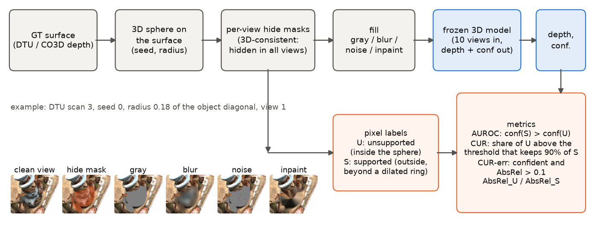
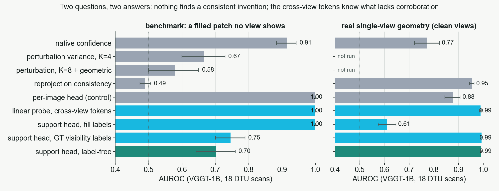
03 / THE METHODChange what the detector must learn
A head trained on the benchmark's fills learns to see the fill, which a single image reveals even when inpainted. So the label was changed to the thing the patch imitates, multi-view support, and the input to clean views: a pixel that only one view supports is the positive class, a pixel two or more views support is the negative class. The decisive control is the same head on per-image tokens, before any cross-view attention.
The method of record goes one step further and needs no ground truth at all. The backbone is run once on clean views; each predicted point is projected into the other views with the predicted cameras and counted as supported where it lands on their predicted surface. That count is the label. The reprojection test is the teacher, and the head has to generalise better than its teacher to be worth having. It does: on phone orbits and tourist photographs, where the model's own cameras are least reliable, the head beats the test it learned from.
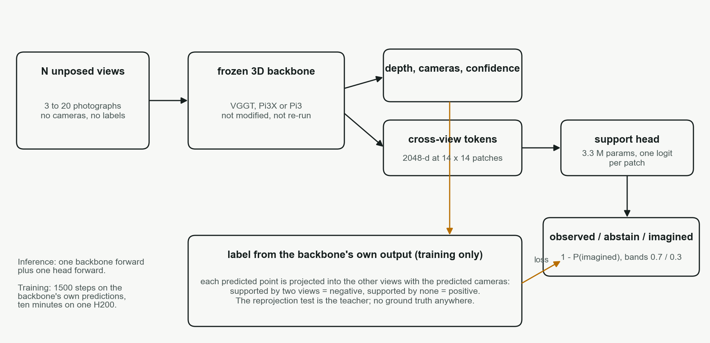
04 / RESULTSThree backbones, four datasets the heads never saw
Clean inputs of 3, 5 and 10 views, three rotations of the view set per scene. DTU: 18 benchmark scans. CO3Dv2: 18 phone orbits. ETH3D: nine building-scale DSLR scans with laser ground truth. Phototourism: nine landmarks from Internet photo collections (British Museum, Florence cathedral, Lincoln Memorial, London Bridge, Milan cathedral, Mount Rushmore, Piazza San Marco, Sagrada Familia, St Paul's) with people and vehicles in front of the monument and COLMAP depth as ground truth. Pre-registered pass conditions, written before the heads were trained, with a 0.02 margin against the control: both pass on every dataset and backbone.
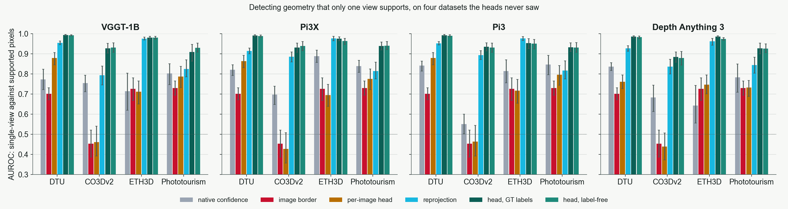
| detector | DTU | CO3Dv2 | ETH3D | Phototourism | ||||
|---|---|---|---|---|---|---|---|---|
| AUROC | CUR | AUROC | CUR | AUROC | CUR | AUROC | CUR | |
| native confidence | 0.772 | 0.530 | 0.754 | 0.723 | 0.715 | 0.566 | 0.802 | 0.451 |
| distance to image border | 0.702 | 0.727 | 0.454 | 0.897 | 0.725 | 0.632 | 0.730 | 0.649 |
| per-image head (control) | 0.878 | 0.340 | 0.462 | 0.878 | 0.712 | 0.666 | 0.787 | 0.530 |
| reprojection consistency | 0.954 | 0.082 | 0.793 | 0.693 | 0.975 | 0.069 | 0.824 | 0.340 |
| linear probe, cross-view tokens | 0.989 | 0.025 | 0.913 | 0.250 | 0.966 | 0.095 | 0.894 | 0.265 |
| support head, ground-truth labels | 0.993 | 0.015 | 0.927 | 0.210 | 0.980 | 0.054 | 0.908 | 0.258 |
| per-image control, self labels | 0.885 | 0.325 | 0.460 | 0.892 | 0.626 | 0.750 | 0.729 | 0.681 |
| support head, label-free | 0.992 | 0.017 | 0.931 | 0.199 | 0.980 | 0.051 | 0.930 | 0.191 |
| label-free head trained on the target capture | -- | -- | 0.841 | 0.474 | -- | -- | 0.926 | 0.203 |
| detector | DTU | CO3Dv2 | ETH3D | Phototourism | ||||
|---|---|---|---|---|---|---|---|---|
| AUROC | CUR | AUROC | CUR | AUROC | CUR | AUROC | CUR | |
| native confidence | 0.820 | 0.493 | 0.697 | 0.846 | 0.887 | 0.304 | 0.839 | 0.450 |
| distance to image border | 0.702 | 0.727 | 0.454 | 0.897 | 0.725 | 0.632 | 0.730 | 0.649 |
| per-image head (control) | 0.863 | 0.376 | 0.428 | 0.889 | 0.694 | 0.685 | 0.775 | 0.577 |
| reprojection consistency | 0.914 | 0.164 | 0.885 | 0.224 | 0.977 | 0.054 | 0.814 | 0.360 |
| linear probe, cross-view tokens | 0.985 | 0.034 | 0.931 | 0.203 | 0.956 | 0.123 | 0.919 | 0.204 |
| support head, ground-truth labels | 0.991 | 0.021 | 0.930 | 0.221 | 0.975 | 0.072 | 0.938 | 0.176 |
| per-image control, self labels | 0.871 | 0.363 | 0.469 | 0.877 | 0.610 | 0.776 | 0.719 | 0.697 |
| support head, label-free | 0.988 | 0.025 | 0.939 | 0.190 | 0.963 | 0.103 | 0.940 | 0.167 |
| label-free head trained on the target capture | -- | -- | 0.964 | 0.095 | -- | -- | 0.929 | 0.198 |
| detector | DTU | CO3Dv2 | ETH3D | Phototourism | ||||
|---|---|---|---|---|---|---|---|---|
| AUROC | CUR | AUROC | CUR | AUROC | CUR | AUROC | CUR | |
| native confidence | 0.841 | 0.489 | 0.551 | 0.882 | 0.814 | 0.498 | 0.847 | 0.447 |
| distance to image border | 0.702 | 0.727 | 0.454 | 0.897 | 0.725 | 0.632 | 0.730 | 0.649 |
| per-image head (control) | 0.878 | 0.345 | 0.464 | 0.880 | 0.717 | 0.661 | 0.795 | 0.510 |
| reprojection consistency | 0.952 | 0.089 | 0.893 | 0.205 | 0.976 | 0.039 | 0.817 | 0.345 |
| linear probe, cross-view tokens | 0.985 | 0.032 | 0.943 | 0.175 | 0.938 | 0.165 | 0.914 | 0.218 |
| support head, ground-truth labels | 0.992 | 0.016 | 0.934 | 0.203 | 0.953 | 0.135 | 0.932 | 0.201 |
| per-image control, self labels | 0.888 | 0.320 | 0.471 | 0.895 | 0.654 | 0.750 | 0.724 | 0.683 |
| support head, label-free | 0.990 | 0.021 | 0.930 | 0.225 | 0.951 | 0.139 | 0.931 | 0.181 |
AUROC and CUR pooled over scenes and view counts (3 and 5 views on CO3Dv2, where ten views around an object leave no single-view pixel). Every paired difference quoted on this page is at the permutation floor unless a p-value is given; the full tables with intervals are in the supplement and in results/P3-stats.md. The last row is the head trained on one half of the target dataset, still without labels, and scored on the other half.
05 / CONTROLS AND ABLATIONSWhat the head reads, and what it does not
Not the frame edge. On the lab rig single-view pixels sit at the image border, and a per-image head learns that: the distance to the border alone scores 0.70 on DTU. Off the rig it collapses (0.45 on CO3Dv2), and so does the per-image control (0.46, indistinguishable from the border score). Depth edges score 0.42 to 0.60. The cross-view head keeps 0.93 to 0.98 on the same scenes.
Where the signal lives. A linear probe on the same cross-view tokens scores within 0.015 of the convolutional head, so the information is in the features; the head is a reader. One probe per VGGT layer says where it appears: layer 4 of 24 scores 0.87 on DTU and 0.48 on CO3Dv2, like the per-image control; layer 17 scores 0.99 and 0.92. Support becomes readable in the second half of the aggregator.
Stable. Two extra initialisation seeds are within 0.005 of the head. With 20 views, twice the most it saw in training, the head scores 0.992 (VGGT) while native confidence falls to 0.61.
Adaptation without labels. Because the labels come from the backbone itself, the head can be trained on the target capture. On one half of a dataset and scored on the other half, this helps where the backbone's own geometry on that capture is reliable (Pi3X on CO3Dv2: 0.939 to 0.964; on ETH3D: 0.963 to --), changes nothing on the landmarks, and hurts VGGT on CO3Dv2 (0.931 to 0.841), whose reprojection test, the teacher, scores only 0.79 there. The DTU-trained head is the safe default.
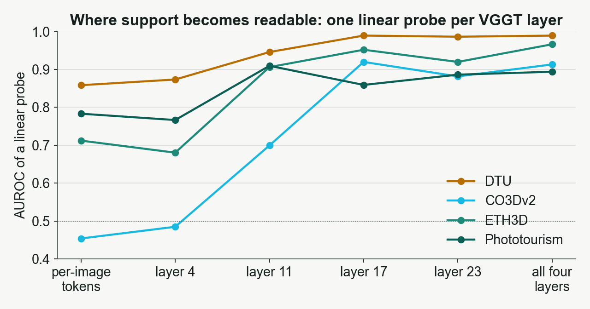
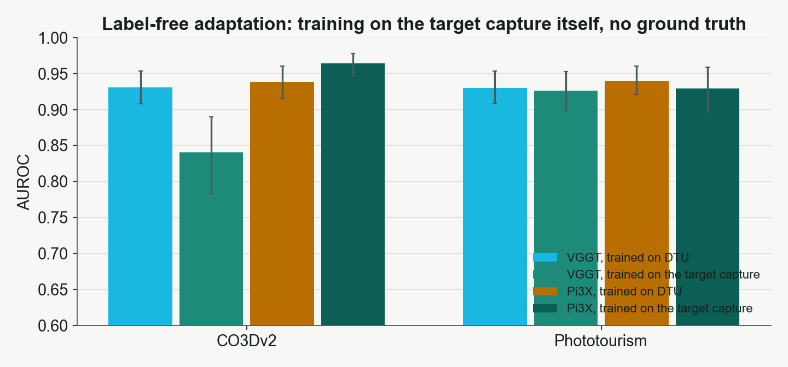
06 / ABSTAININGWhat a user gets from it
A detector is used with a threshold. CUR sets it on the test scene itself, which a deployed filter cannot do, so from the per-pixel scores (run P6-dump) three deployable readings. Ranking: keeping the half of the pixels the head trusts most lowers the depth error of what remains by 15 to 44%, and the area under the single-view rate of the kept pixels against coverage is within 0.02 of the oracle on every dataset. Fixed bands, set before any evaluation at 0.3 and 0.7: the head marks 82% of the pixels observed on DTU with 1% single-view inside, 64% with 3% on CO3Dv2. Frozen thresholds: a threshold set to keep 90% of the supported pixels of the other scenes lets 1% of single-view pixels through on DTU and 16% on CO3Dv2, against 63% and 83% for native confidence. VGGT's native confidence has no scale that transfers between datasets at all; the head's probability does.
| dataset | detector (VGGT-1B) | AURC | AbsRel, all | AbsRel, top half | CUR / kept at a threshold set on the other scenes | observed / abstain / imagined | single-view share inside observed |
|---|---|---|---|---|---|---|---|
| DTU | native confidence | 0.077 | 0.0069 | 0.0037 | 0.63 / 0.89 | -- | -- |
| DTU | reprojection | 0.035 | 0.0069 | 0.0051 | 0.08 / 0.94 | -- | -- |
| DTU | head, label-free | 0.026 | 0.0069 | 0.0044 | 0.01 / 0.90 | 0.82 / 0.03 / 0.14 | 0.008 |
| CO3Dv2 | native confidence | 0.105 | 0.0261 | 0.0193 | 0.83 / 0.90 | -- | -- |
| CO3Dv2 | reprojection | 0.088 | 0.0260 | 0.0214 | 1.00 / 1.00 | -- | -- |
| CO3Dv2 | head, label-free | 0.070 | 0.0261 | 0.0221 | 0.16 / 0.82 | 0.64 / 0.10 / 0.26 | 0.034 |
| ETH3D | native confidence | 0.196 | 0.0221 | 0.0156 | 0.68 / 0.89 | -- | -- |
| ETH3D | reprojection | 0.125 | 0.0220 | 0.0170 | 0.03 / 0.93 | -- | -- |
| ETH3D | head, label-free | 0.123 | 0.0221 | 0.0162 | 0.07 / 0.90 | 0.57 / 0.07 / 0.36 | 0.008 |
| Phototourism | native confidence | 0.030 | 0.0391 | 0.0196 | 0.57 / 0.89 | -- | -- |
| Phototourism | reprojection | 0.024 | 0.0390 | 0.0251 | 0.30 / 0.91 | -- | -- |
| Phototourism | head, label-free | 0.012 | 0.0391 | 0.0233 | 0.20 / 0.90 | 0.72 / 0.10 / 0.18 | 0.007 |
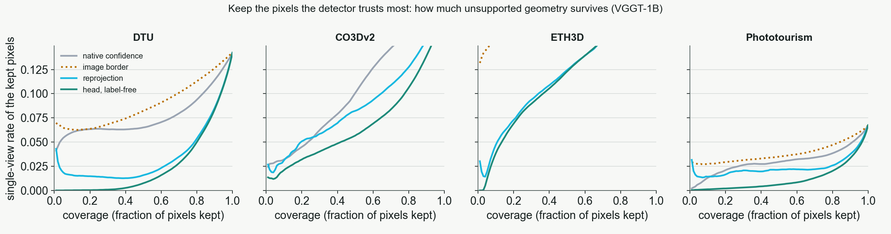
07 / THE LIMITA consistent invention passes
The benchmark defines unsupported geometry as a surface no view shows; the detector was trained on surfaces only one view shows. Put back to the benchmark's filled patches, the visibility heads score AUROC 0.70 to 0.74 on DTU and 0.63 on CO3Dv2, below native confidence on the same rows. A head trained to find single-view geometry does not fire on a patch that every view shows, for the reason the reprojection and perturbation baselines do not: the invented surface is coherent across views and across the features. The head certifies agreement between views, and a consistent invention has it. The detector answers "which pixels lack corroboration", not "which surfaces were invented"; on real captures, the first question is the one with an answer.
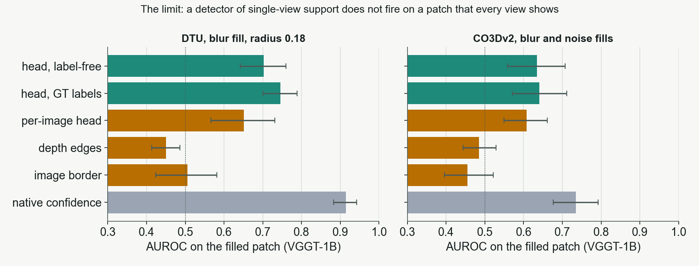
08 / VIDEOThree minutes, no audio
The story of this page in order: the question, the protocol, the leak, why the cheap fixes and the fill-trained head fail, the label-free head, the four datasets, the controls, what abstaining buys, and the limit. Every chart in it is recomputed from the released CSVs when the video is built.
Earlier videos
The benchmark demo (the masking protocol run live on DTU and CO3Dv2 data, then the five models' recorded outputs) and the end-to-end walkthrough (the CPU self-test live, the recorded runs, the charts, chaptered) predate the support head and show the benchmark side in detail.
09 / REPRODUCIBILITYEvery number from a logged run
Each table cell maps to a run id whose CSV, configuration and log are in the repository (results/), together with the dated log of every failed run and every correction (LOG.md, EXPERIMENTS.md). The pass conditions of the heads were written into that registry, with dates and commit hashes, before the heads were trained. The benchmark is 1000 lines of Python with no training and runs on one 16 GB GPU in about eight hours; a head trains in ten minutes on one H200. Everything on this page, including the charts and the video, is regenerated by the scripts in scripts/.
CITATIONCite
@inproceedings{observeimagineabstain2027,
title = {Observe, Imagine, Abstain: Detecting Hallucinated Geometry
in Feed-Forward 3D Reconstruction},
author = {Anonymous},
booktitle = {CVPR submission},
year = {2027}
}